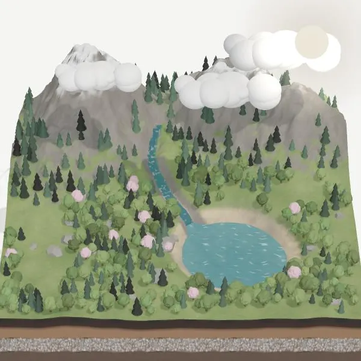

正在搭建小世界…
WATER CYCLE
02
水去
哪儿了？
拖动
云朵
换地方 ·
按住
云朵能挤出雨
1
蒸发
2
凝结
3
降水
4
汇流
↻
太阳、云、雨和小河，让水一直在转圈。试试拖动下面的
太阳时间
，或者拖动天上的
云朵
。
太阳
10:30
▶ 播放
重来
真实的水蒸气是看不见的，这里画成白点方便观察。AI 辅助开发。
WATER CYCLE
02
水去哪儿了？

重新打开
1
蒸发
：太阳把湖面晒热，一部分水变成看不见的水蒸气，飘上天。
2
凝结
：水蒸气升到高处遇冷，变回很多小水滴，聚在一起就是云。
3
降水
：云里的小水滴越聚越多、越来越重，就落下来变成雨。
4
汇流
：雨水顺着山坡汇成小河，流回湖里，水又开始下一圈。